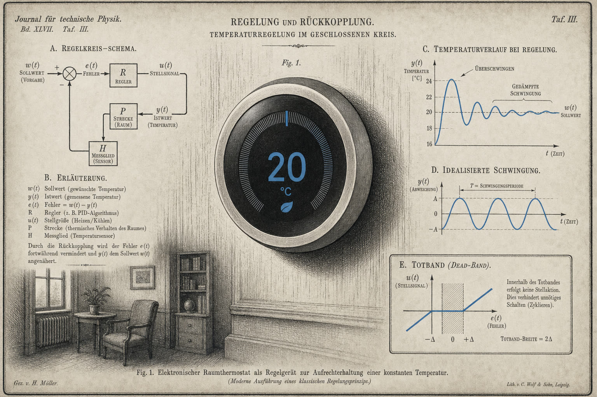
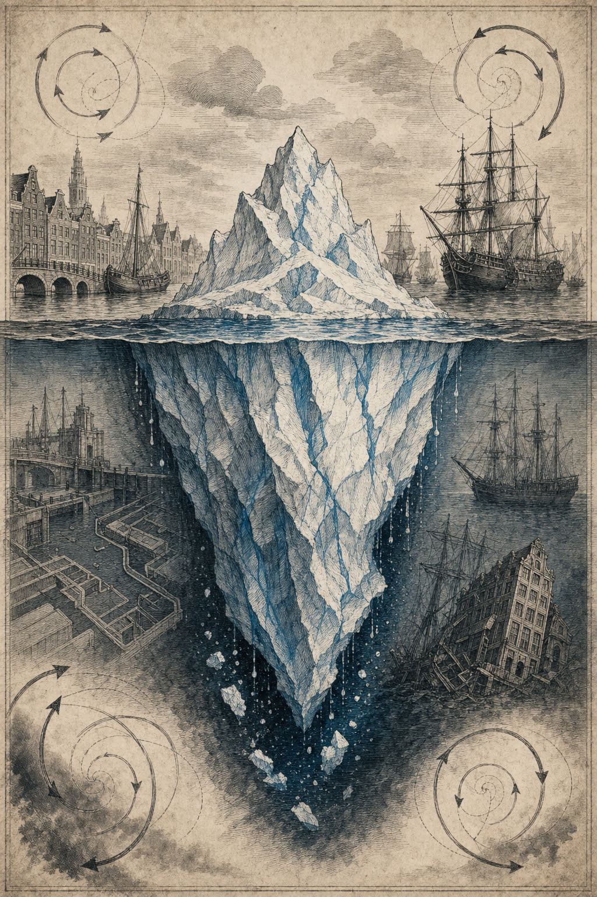
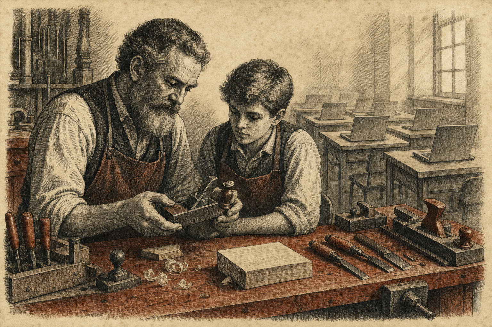
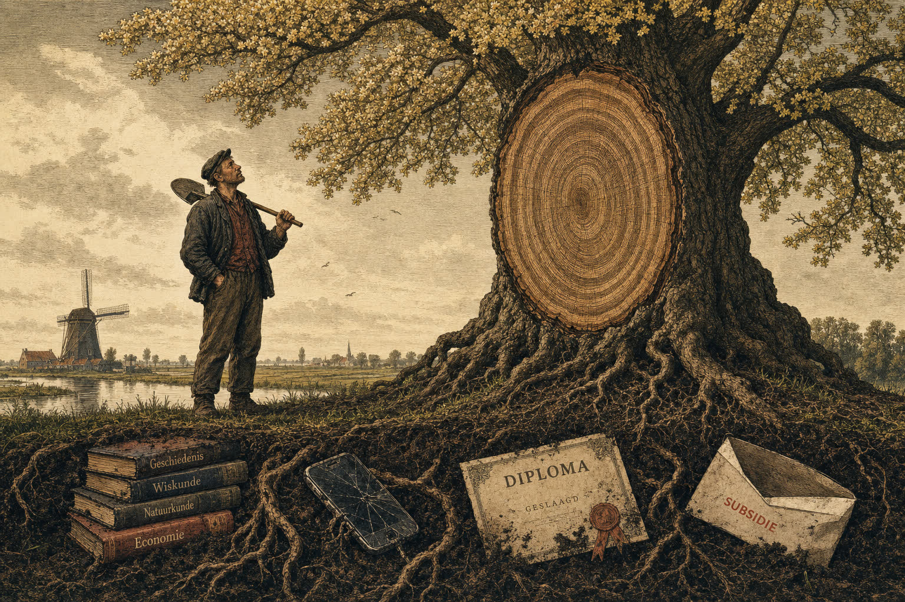
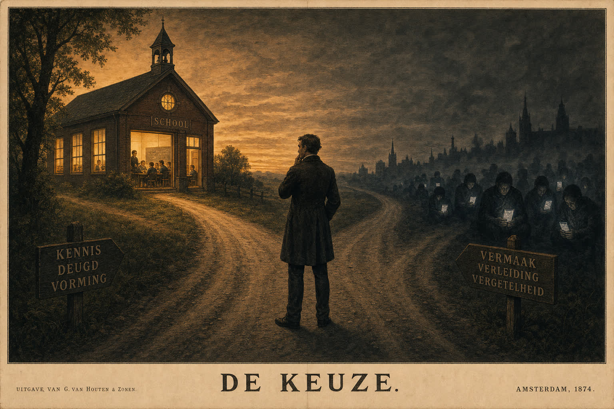
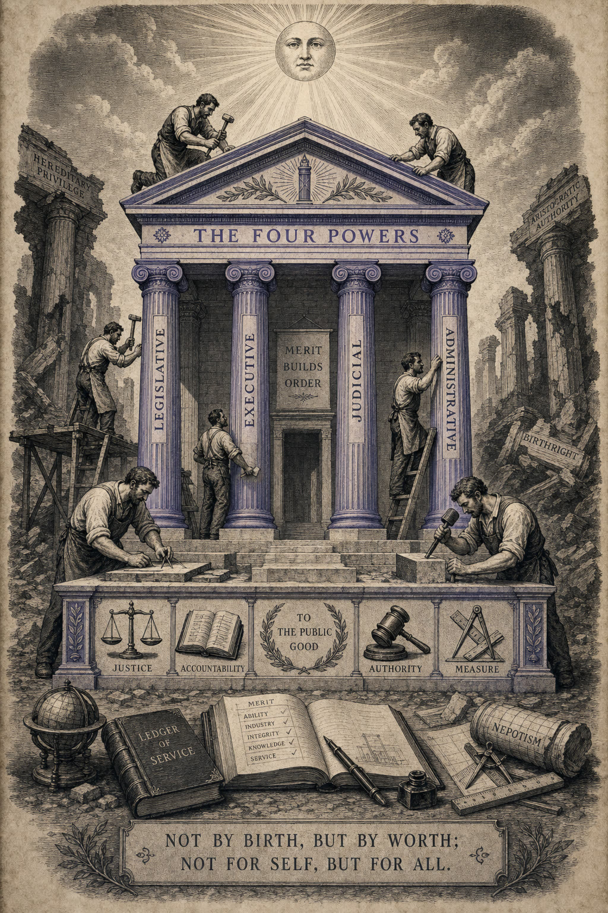
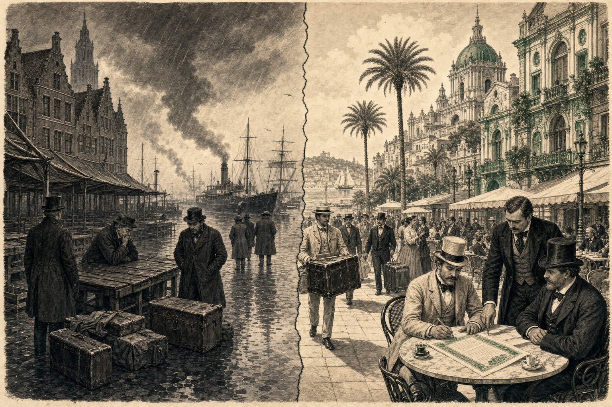

Девять материалов — одна идея
Почему я такой, какой есть
Об итоге в конце пути и о людях, живущих только завтрашним днём. Личная исповедь в восьми частях.

Ваш термостат умнее вашего министра
Крадут 20 000 евро. Расследование обходится в 73 000. О государстве без обратной связи и почему это нас разрушает.

NEPK-климатологика
Почему экономический коллапс Нидерландов происходит быстрее, чем ожидалось. Анализ переломного момента с конкретными датами.

Назад к верстаку, вперёд к мышлению
Манифест. Три пути — мастерство, широкие знания, классическая подготовка — для восстановления нидерландского образования.

Цена расцвета
Чего стоит восстановление нидерландского образования — в деньгах, усилиях и электоральной отдаче. И почему промедление обходится дороже.

Выбери сторону
Финал. Что ещё можно спасти, что уже нельзя, и почему Вам нужно высказаться прямо сейчас.

Nova Democratia
Новая политико-государственная модель, объединяющая демократию и эффективность. Не поправка — иной фундамент.

Семь измерений
От теоретической физики к технологическим прорывам. Как G, W и N расширяют стандартную модель — и что это означает для вычислительной техники, нанотехнологий и квантовых вычислений.
NEPK-FX
Нейронное прогнозирование валютных курсов на основе формулы NEPK. С конкретными торговыми сигналами на 12 и 24 месяца — доказательство работоспособности модели.

От налогового бремени — к привлечению
Нидерланды облагают налогом то, что следовало бы удерживать. Конкретный план по привлечению капитала, талантов и предприятий вместо их вытеснения.

Устойчивость и отбор
Почему общество, устраняющее всякое сопротивление, подрывает собственные силы. О биологической и экономической логике устойчивого отбора.